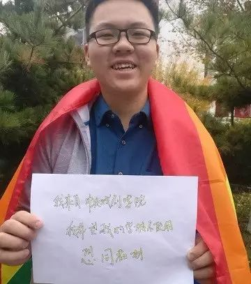
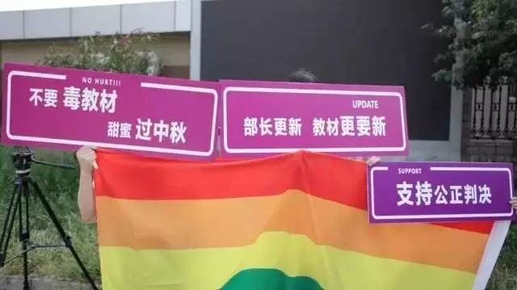

双11，他决定用一千个日子每一天寄一封信给同一个人
双11大家在庆祝单身， 他也做了一个生命中重要的决定， 他要每1天寄1封信，持续1000天， 收信人的名字是 教育部 ^-^  我叫柳星宇，今年读大一。 记得很早之前看过一期新闻调查， 那个时候柴静还在， 她选择了一个生冷的题材----同性恋。 如果我没有记错的话， 那是中国的官方电视节目中， 第一次， 出现了同性恋的身影， 也还是从那个时候开始， 我开始了解同性恋。 后来慢慢长大， 读了很多书， 我开始知道每个人都有相爱的权利， 同性恋也不是病。 我一直以为这么多人普及、 这么多人呼吁， 一定不会有人再说同性恋是病。 直到我看到秋白的新闻， 我知道， 我错了。  我没有想到， 到了今天， 我们用的教材， 还有40%的心理学教材说同性恋是性变态， 50%的心理学教材教大家怎么矫正治疗同性恋！ 我们的老师， 还在课上公开告诉我和我的同学、 还有我们的学弟学妹， 同性恋是病， 同性恋可以“变好”。 我知道同性恋不是病， 也不需要治疗， 但是其他的同学呢？ 他们会不会因为朋友是同性恋而疏远他们？ 他们会不会因为自己是同性恋而纠结压抑？ 看着秋白， 那个起诉教育部不作为的女生， 一个人抗争地这么久， 这么辛苦， 我觉得， 我不可以就这么什么都不做。 我记得，杰鲁巴韦说： “发言一人即可，沉默却有赖众人合作”。 在这个事情上也是如此， 我们沉默， 教育部就永远不会承担它应该承担的责任。 只要我们一个人发声， 就会有越来越多的人愿意站出来， 这样， 总有一天我们会看到教材的改变， 观念的转变。 那是我们的决心， 决心自已教材自己救， 决心不是不是坐等施舍而是自主争取； 那是我们对美好未来的希望， 希望我们的学校都不使用恐同的教材， 希望我们的社会能够更加多元， 希望我们每个人都能活出真实的自己。 我今年大一，1000个日子后，我就快要毕业了， 我想用我这大学，见证教科书去污名的改变过程 你愿意和我一起吗？ 然后，就需要你一起来转发、邀请你身边更多的朋友加入了！ 还有，帮我一起数1000个日子吧！11月11日就是第1天！ 哈维尔说：“通常都会有许多人过来劝说，没有用的。
如上图，写上“我来自/毕业于**学校，我不希望我的学校使用恐同教材”，或其它你想说的话，拍下你和它的合照，微信或微博发给我们@恐同教材拯救计划
我的回答非常简单：有用！”